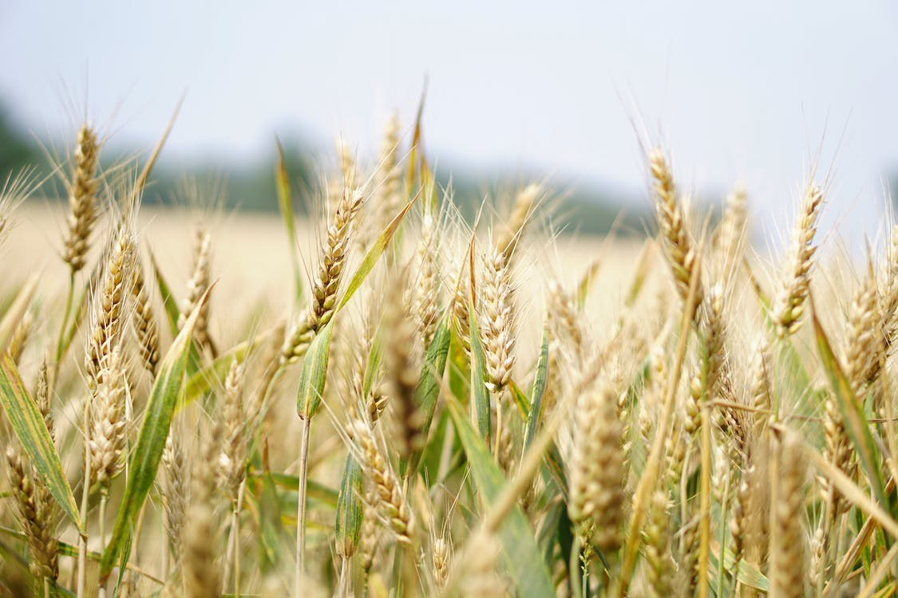
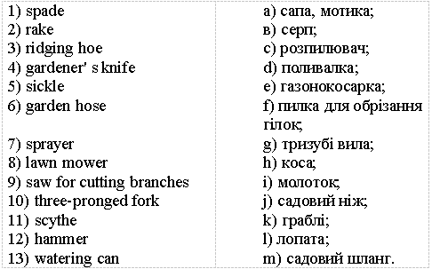

Lesson 1
UNIT 1
Agricultural development
BASIC AGRICULTURE

Agriculture in Ukraine
Learn the active vocabulary of the Lesson and be ready to use it in your further work:
Crop production —
рослинництво;
animal husbandry —
тваринництво;
livestock n –
тваринництво, домашня худоба;
grain and industrial
crops — зерновi та технічні культури;
cereals n —
хлiбнi злаки;
dairy
and beef cattle breeding — розведення молочної та м’ясної
худоби;
pig raising —
свинарство;
sheep farming — вiвчарство;
bee-keeping — бджiльництво;
poultry industry — птахiвництво;
poultry farm –
птахоферма;
state farms — радгоспи; державні
підприємства;
collective farms — колгоспи; колективні підприємства;
farm n –
фермерське господарство;
farm property – фермерське майно;
land share – земельний пай;
shareholder n –
пайовик;
land back –
повернення землі;
private agricultural
association – приватне сільськогосподарське
об'єднання;
subsidy n –
субсидія;
livestock inventory
- інвентаризація худоби;
to cope v – впоратися, долати;
fleets of aging -
старіння парку;
inefficient
machinery – неефективна техніка;
crop selection – відбір сільськогосподарської культури.
Read
the text and answer the questions:
1.
Why is agriculture very important? 2.
What are the two branches of agriculture? 3. How do people increase crop yields?
AGRICULTURE
IN UKRAINE
Ukraine has very
favourable conditions for the development of agricultural production: fertile
soils, temperately warm climate, a well- developed industry processing
agricultural raw materials. Ukraine has been known as the breadbasket of Europe,
accounting for about 25% of the world
most fertile black soil. Ukraine is the world’s largest exporter of sunflower
oil and one of the top exporters of grains.
There are two main
branches of agricultural production in Ukraine: crop production and animal
husbandry. Crop production is
the practice of growing and harvesting crops. It includes: grain and industrial
crops, meadow culture, fruit and vegetable raising. Almost half of the cropping
area is occupied by cereals such as winter wheat, maize and legumes, rye, oats
and barley. Among the industrial crops such as sugar beet, sunflower, flax the
leading position is occupied by sugar beet. Close to 40 types of vegetable
crops
are grown in Ukraine: potatoes, cabbage, tomatoes, cucumbers, red beets,
carrots, onions, garlic, etc. Melon-growing is practiced mainly in the
south.
Animal husbandry is
the practice of breeding of farm animals and their use. The most widespread
branches of animal husbandry are: dairy and beef cattle breeding, pig
raising, sheep farming and bee-keeping. The
poultry industry is spread through all the provinces. Birds farmed include
chicken, duck, goose, turkey. There are large mechanized poultry farms to
produce eggs and meat.
Ukrainian agriculture has been evolving since it achieved independence in 1991, following the breakup of the Soviet Union. State and collective farms were officially dismantled in 2000. Farm property was divided among the farm workers in the form of land shares and most new shareholders leased their land back to newly-formed private agricultural associations. The sudden loss of State agricultural subsidies had an enormous effect on every aspect of Ukrainian agriculture. The contraction in livestock inventories that had begun in the late 1980's continued and intensified. Fertilizer use fell by 85 percent over a ten-year period, and grain production by 50 percent. Farms were forced to cope with fleets of aging, inefficient machinery because no funds were available for capital investment. At the same time, however, the emergence from the Soviet-style command economy enabled farmers to make increasingly market-based decisions regarding crop selection and management, which contributed to increased efficiency in both the livestock and crop-production sectors. At the present, in order to increase crop yields and animal products farms apply widely intensive technologies.
EXERCISES
I. Answer the following questions:
1.
Is life possible without plants?
2.
Where are farm crops used?
3.
What is crop production?
4.
What are the main farm crops?
5.
What does animal husbandry include?
6.
What products do farm animals produce?
7.
How do farmers improve the physical condition of the soil?
8. What do farms do in order to increase crop yields and
animal products at the present?
II. Translate the international words:
Condition, production, productive, industry, industrial, region, material, climate, machine, tractor, practice, agricultural, combine, bulldozer, to mechanize, position, tendency, tradition, traditional, farm, collective, intensive technology, mix, problem, cultivation, hectare, popular, progress, process.III. Arrange the words into pairs of:
a)
synonyms:
Administration,
forecast, command, opinion, obey, also, data, workforce, work, to choose, to
demonstrate, too, information, staff, job, to show, to foresee, personnel,
order, point of view, to submit, management, layer, level, to select, vice
versa, on the contrary.
b)
antonyms:
To reject, same, satisfaction, senior, inward, to lose, junior, outward, democratic, to achieve, to obey, autocratic, to command, to adopt, another, dissatisfaction.
IV. Match the words on the left with their meanings
on the right:
V. Complete the sentences using the appropriate words from the text:
1.Ukraine has very favourable conditions ... . 2. There are two main branches of agricultural production in Ukraine ... . 3. Crop production is ... 4. It includes ... . 5. Almost half of the cropping area is occupied by cereals such as ... . 6. Close to 40 types of vegetable crops are grown in Ukraine: ... . 7. Animal husbandry is ... . 8. Birds farmed include ... . 9. In order to increase crop yields and animal products collective and state farms apply ... .
VI. Read and translate the meanings of the following terms. Translate the sentences with them:
Proprietor
-
is an owner, especially of a business or hotel.
1.
All complaints should be made to the proprietor.
Property -
1) is a thing or things owned, whether material or abstract;
2)
is land and buildings;
3)
is a house, factory, etc. and the land around it.
1.
Please take care of personal property.
2. The site was bought by a property developer.
3. He has bought a property in
the south of France.
Loan - is something lent, usually money, on the condition it will be paid back after an agreed period with interest.
VII. Translate into Ukrainian and form the sentences:
Favourable
conditions; agricultural production; fertile soils; agricultural
raw material; crop production; animal husbandry; grain crops; industrial crops;
temperately warm climate; dairy and beef cattle breeding; poultry industry;
farms.
VIII. Match
the English names of garden tools and agricultural implements to their Ukrainian
equivalents:

IX. Read and translate the text paying attention to the active words and word combinations:
FARM
WORK IN DIFFERENT SEASONS
Spring
Spring is the time
to prepare the soil for planting. First, the farmer fertilizes his field with
cow manure or a chemical fertilizer. Then he plows the soil, turning it over and
mixing in the fertilizer to provide a rich soil for the crops. Later, when the
days a little longer and the sun has warmed the soil, it is time to plant the
seeds. Meanwhile, if the farmer raises the animals, spring is the time when the
animals are giving birth, and both mothers and their young ones have to be
watched and cared for.
Summer
After planting the
farmer waits and watches .He watches the weather, hoping for enough sun. He
waters the young plants and watches carefully for sings of plant 31 disease and
attacks of insects. Many farmers spray their fields with chemicals to keep away
disease and harmful insects. With water, sun, care and protection the plants
grow strong and healthy. Summer is also suitable time for cutting grass and
making hay.
Autumn
This is the busiest
time of the year. Now the crops in the fields are ready to harvest. The fruit is
ready to pick. It is time to gather in the vegetable crops and to reap the grass
crops, such as wheat and corn. The farmers have to work quickly. Often it is
necessary to call in extra workers to work in the fields and bring in the crops.
Work starts when the sun rises and finishes when the sun sets.
The days are hard and long. But when the job is done, it is time fore
celebrating, for dancing, eating , drinking and having fun.
Winter
The days are getting shorter and shorter. The harvested crops are sold in
the markets or stored in the barns, ready feed and animals though the winter
months. The farmer chops wood, preparing to keep his house warm through the long
cold winter nights. And when winter finally comes, it is time for planning, for
deciding where and what to plant next year. For soon it will be spring again and
the cycle of planting, growing, and harvesting will start
again.
X. Answer the questions:
1. Spring is the
time for gathering crops, isn' t it?
2. What does the
farmer do in the fields in spring?
3. What does he
fertilize his fields with?
4. Why does he plow
the soil?
5. Have you ever
visited a farm? When? Where?
6. Would you like to be a farmer? Why? Why not?
XI. Put these events in the order they usually occur:
1.
First, the farmers_______
a)
harvest the crops.
2.
Then, they____________
b)
fertilize the fields.
3.
After that,
they________
c) feed the animals in winter.
4.
They may have
to______ d)
store the crops.
5.
Finally, it' s time to_____
e)
plant the crops.
6.
Then they have to______
f)
plough the fields.